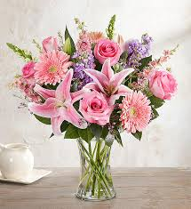
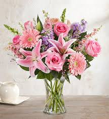

A rose garden or rosarium is a garden or park, often open to the public, used to present and grow various types of garden roses or rose species. Designs vary tremendously and roses may be displayed alongside other plants or grouped by individual variety, colour or class in rose beds. Public rose gardens are a feature of many towns and cities. Since 1995, the World Federation of Rose Societies grants the Award of Garden Excellence. So far, 42 gardens have been selected.
 
